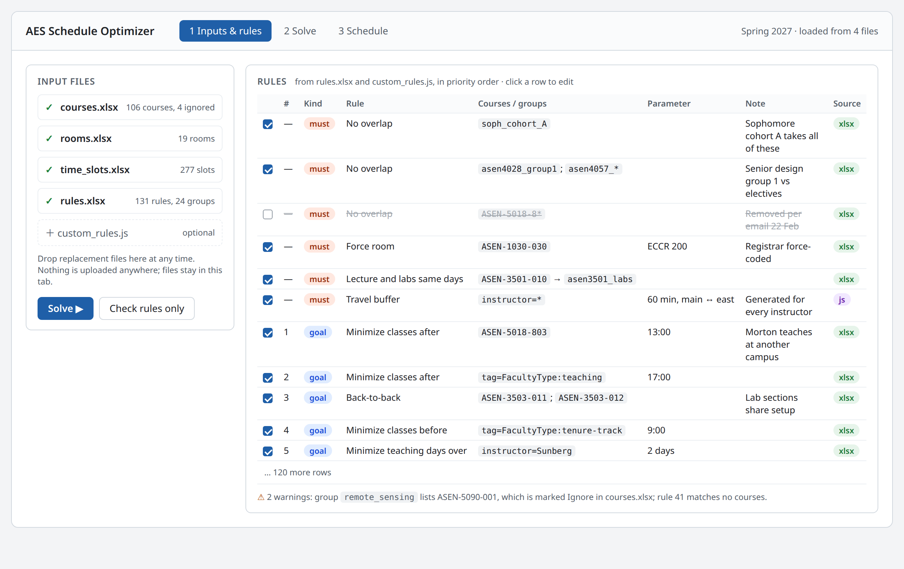
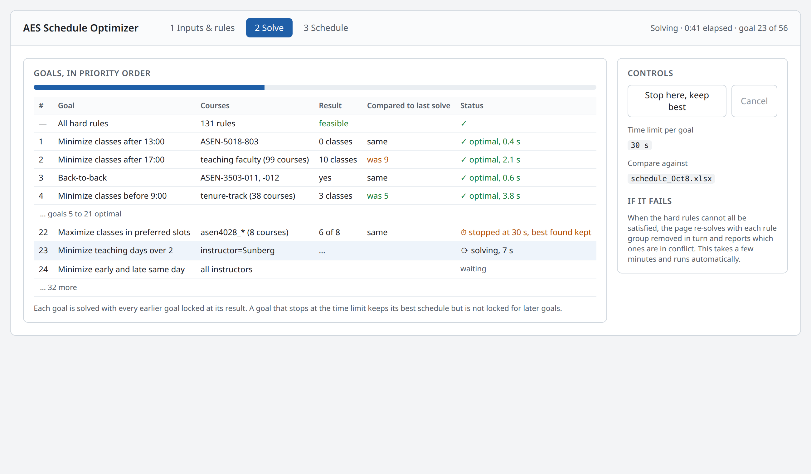
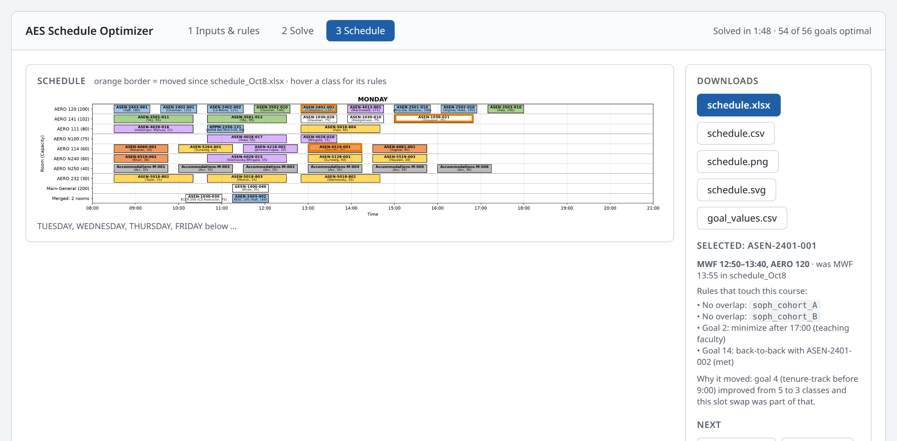

In-Browser Schedule Optimizer: Design Summary
Summary
The proposal is a single web page that builds the AES course schedule entirely in the user's browser: upload the input spreadsheets, press Solve, and get back the schedule, the visualization, and a table showing how well each scheduling goal was met. Nothing is installed and no server is involved, so it can be hosted as a static page and used by anyone with the link. The interface follows the spirit of the schedule viewer already in use: drop a file on the page and the result appears, with no accounts, installation, or setup.
Today the same solve runs as a GitHub Action that takes about 3 minutes and requires edits to Python code whenever a scheduling rule changes. The main change in this design is that the rules move out of code and into a spreadsheet, rules.xlsx, that administrative staff maintain alongside courses.xlsx, rooms.xlsx, and time_slots.xlsx. The optimization itself stays the same: a mixed-integer program, solved by the HiGHS solver compiled to WebAssembly, with the goals handled in priority order exactly as now.
What this does not change: someone still needs to understand the model when a solve comes back infeasible or produces a surprising result. The design reduces how often that happens and makes the cause easier to see, but it does not remove the need.
Screens
The page has three views, shown here as mockups. The data in them is from the current Spring 2027 schedule; the rule names and the rule-level details are illustrative.
1. Inputs and rules. The four spreadsheets and the optional script are loaded here. Every rule appears in one table with its kind, the courses or groups it applies to, its parameter, the note from the spreadsheet, and where it came from. Rules can be switched off for a solve without editing the file. Problems with the inputs are reported before solving.

2. Solve. Goals are worked through in priority order and each one reports its result as it finishes, with a comparison against a previous schedule if one is loaded. A solve can be stopped early and still yield a valid schedule. When the hard rules conflict, the page runs an automatic search for which rule groups are responsible, so that the answer is a short list of rules rather than a solver error.

3. Schedule. The result in the existing schedule viewer, with changes from the previous schedule outlined. Clicking a class lists the rules that apply to it and, when it moved, which goal caused the move. Downloads produce the same files the GitHub Action produces today.

How a solve works
A solve is one trip around the loop below, with no step leaving the browser tab.
The page reads the four spreadsheets, turns every rule into equations, and hands them to the solver. Results appear as they come in, goal by goal, and the final schedule is shown in the existing schedule viewer with download buttons for the xlsx, CSV, SVG, and PNG.
The current problem has 106 courses, 19 rooms, 277 time slots, and 56 prioritized goals. The solver only considers room and time combinations whose labels match each course's requirements, which leaves about 5,800 yes-or-no decisions. That is small enough that a full solve should take well under the 3 minutes the GitHub Action takes today.
Rules: constraints and objectives
Every scheduling rule is one row in rules.xlsx, and there are two kinds. A constraint is a hard rule the schedule must satisfy, such as "these sections cannot overlap" or "this course must be in ECCR 200". An objective is a goal the optimizer tries to do as well as possible on, such as "as few classes after 5 pm as possible for teaching faculty". Constraints have no priority; they all apply. Objectives have a priority number, and the number is what decides trade-offs.
Priority order is strict. The optimizer satisfies all constraints, then does the best it can on objective 1, locks in that result, and only then considers objective 2, and so on down the list. A lower-priority goal can never make a higher-priority one worse. This is how the current Python code already works; the difference is that the order becomes a column administrative staff can edit instead of the order of lines in a file. An optional tolerance lets a goal give up a little, for example 5%, so that goals below it have room to improve.
Rule types. The current schedule uses these, and they are the full vocabulary of rules.xlsx:
| Rule | Kind | What it takes | In use now |
|---|---|---|---|
| No overlap | constraint | a set of courses | 47 |
| Same time slot | constraint | a set of courses | 2 |
| Lecture and labs on consistent days | constraint | a lecture and its labs | 5 |
| Force room / force time slot / avoid rooms | constraint | courses and a room or slot | 5 |
| Limit final exams per block | constraint | a set of courses and a count | 8 |
| Minimize classes after / before a time | objective | a set of courses and a time | 38 |
| Back-to-back | objective | two or more sections | 11 |
| Minimize teaching days over N | objective | an instructor and N | 3 |
| Prefer / avoid rooms, prefer slots | objective | courses and rooms or slots | 4 |
| Early-and-late same day, travel buffer, room fill | objective or constraint | an instructor set and a parameter | 4 |
Course groups. Most rules apply to groups of courses rather than single sections. Groups are defined once, in a groups sheet, and referenced by name everywhere. A group's members can be listed as:
a course id:
APPM-2350-010a pattern:
ASEN-2501-*for every section of a coursean exclusion:
!ASEN-2501-010to drop the lecture and keep the labsa label expression:
Bioastro && !Lab, over the labels incourses.xlsx, so membership can also live in a column next to the courseanother group:
soph_cohort_Ainsidejunior_TF_overlap
| Group | Members |
|---|---|
| asen2501_labs | ASEN-2501-*; !ASEN-2501-010 |
| soph_cohort_A | ASEN-2401-*; ASEN-2501-*; APPM-2350-010 |
| junior_labs | asen3501_labs; asen3502_labs; asen3503_labs |
| teaching_faculty | instructor=Glusman; instructor=Hodgkinson; instructor=Rhode; ... |
The page checks every group and rule when the files load and warns about anything that matches no course, references a course marked Ignore, or uses a name that does not exist. A silently empty group is the most common way a rule goes missing today, so these warnings are shown before the solve starts.
Labels and matching. Courses, rooms, and time slots each carry any number of labels in a column of their spreadsheet, replacing the single type column used today (satisfaculty issue 74). Which rooms and slots a course may use is given by a match expression over those labels, written with &&, ||, !, and parentheses: a course whose room requirement is lab && seats40 may only go in rooms carrying both labels, while AERO || ECCR allows either building. Group membership uses the same expressions, so a group can be Bioastro && !Lab instead of a list of course ids. What to do when a course lists several labels with no expression, meaning whether a room must carry all of them or any one, is an open question below.
Enabled and Note columns. Rules can be turned off without deleting them, and every rule carries a note. The current Python file has about a dozen commented-out rules and explanatory comments like "removed per email of 22 Feb". Those become visible rows instead of code comments.
Advanced rules: the custom script
A few rules do not fit a spreadsheet row, such as "a 60-minute travel buffer for every instructor who teaches on both campuses" or a family of four near-identical rules that differ by one senior-design section. For these the page accepts an optional small JavaScript file, written by whoever maintains the model, which is expected to be a faculty member rather than administrative staff.
The script can only do one thing: return a list of rules using the same rule types as rules.xlsx. It cannot add raw equations to the model. Every rule it produces appears in the same rule table as the spreadsheet rows, marked with its source, and can be turned off there. That keeps one place where all rules are visible, which matters most when a solve fails and someone has to work out why.
The page has a small editor for the script with syntax and error reporting, and the script can be downloaded and committed next to the spreadsheets so that each solve's full set of inputs is kept.
What changes for administrative staff
| Today | With the page | |
|---|---|---|
| Editing courses, rooms, time slots | spreadsheets on SharePoint | same |
| Editing a scheduling rule | ask a faculty member to change Python code | edit a row in rules.xlsx |
| Running a solve | upload to GitHub, open a pull request, wait for the action | drop files on the page, press Solve |
| Seeing results | PNG in the pull request after a few minutes | in the page as goals finish, usually under a minute |
| Trying a what-if | a new pull request per attempt | toggle a rule, solve again |
| When a solve fails | read the action log, ask for help | the page names the conflicting rules; help may still be needed |
| Record of a solve | commit in GitHub | download the outputs and the rules file; GitHub stays the archive if we keep committing them |
The things that still need someone who understands the model: writing the custom script, deciding what to do when two rules genuinely conflict, and judging whether a surprising schedule is a modeling mistake or a real trade-off. The page makes those cases rarer and easier to diagnose, not gone.
Effort, risks, and open questions
The port is one to two weeks of focused work: the model-building code is about 2,500 lines of Python with a dozen constraint types and eleven objective types, all simple to express in JavaScript, plus the rules loader and the three screens. The schedule viewer already exists as a static page and is reused as is.
Maintenance and code style. The optimization code, meaning the rules loader, the model builder, and the solver call, should be written as much like numerical code as possible: plain functions over arrays and maps, named after the quantities in the formulation, with the variables, constraints, and objectives laid out the way they appear in the math, and no web framework or clever JavaScript. It will be maintained by engineers who understand the optimization but are not web developers. The web part, meaning file loading, the three screens, and the viewer, will be written and maintained with Claude. The two should live in separate files so that an engineer can change the model without touching the page.
Risks
Solve time in the browser is not yet measured. The problem is small, so this is expected to be fine, but the first step is to time one solve in the browser solver before building anything else.
Two implementations during the transition. The plan is to retire the Python once the page reproduces the current schedule from the same inputs, so there is no long period of maintaining both.
Group and rule syntax must be learnable from examples. The first
rules.xlsxwill be a direct translation of the current Python file, so every current rule is an example.
Open questions
Where the inputs and outputs live. The simplest is to keep SharePoint as the source of truth. Reading and writing SharePoint directly from the page is possible but needs a campus app registration.
Whether the final-exam scheduling step, which is a separate script today, should be folded into the same page.
Who maintains the custom script after the initial build.
Label matching default: when a course lists several room or slot labels without an expression, whether a room must carry all of them or any one of them.